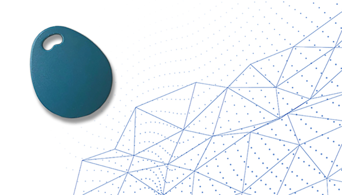
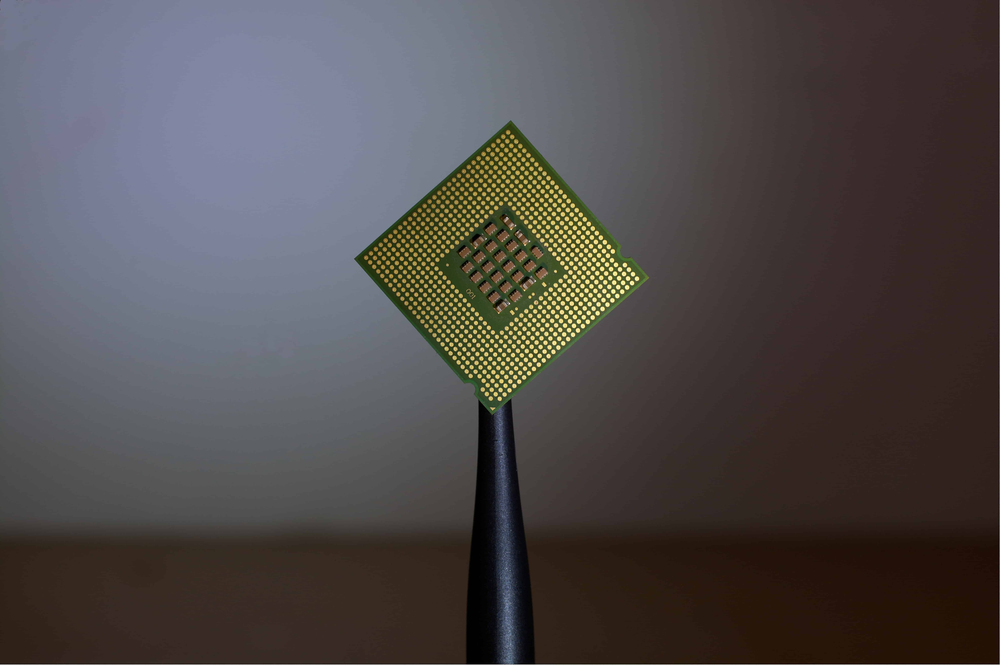

UniTag
Vi vill göra det enklare med UniTag – Allt du behöver
Med UniTag har du dina nycklar på ett och samma ställe - tiden då du får leta efter rätt nyckel är förbi!
För att undvika att ha massor med olika nycklar har vi förenklat för individen, vi har utvecklat ett system som ger dig kontroll över vem som kan gå in genom dörren. Du kan själv välja att aktivera eller avaktivera UniTag, du kan ge temporär access för att släppa in hemtjänsten eller en släkting utan att behöva lämna ut en fysisk nyckel.
Nu har du alla nycklar på ett ställe, med UniTag syns det att just du är på plats och det går även att övervaka ditt lås för att se vem det är som gått in hemma hos dig. UniTag är personlig och endast du kan använda din tagg.
Beröringsfri tagg utförd i högblankt PVC material.
| Teknisk Specifikation - UNITAG | |
| Storlek | 5x5x1,5 cm |
| Vikt | 20 gram |
| Batteri | Ja - 5 års hållbarhet |
| Garanti | Livstid |
| Kretskort | ABC1337 |
| Färg | Grön Blå |
UniChip
När den vanliga modellen UniTag inte är tillräcklig och du vill ha ut mer av produkten har vi tagit fram en mer avancerad modell - UniChip.
Om du har svårt att hålla reda på en tagg, kognitiva svårigheter eller vill gå utan att bära med dig nycklar, plånbok och dylikt finns den mer avancerade lösningen med UniChip. Den placeras under huden både smidigt och utan biverkningar på något av våra service-center och vi erbjuder livstids garanti med regelbundna kontroller. Med UniChip har du samma möjligheter att koppla flera olika nycklar till din personliga UniTag eller UniChip.
När du använder UniChip kan du välja till utökade funktioner såsom wireless payment för att undvika plånbok med kort med pinkoder och BankID för legitimering hos myndigheter, inom sjukvården eller när du på annan plats behöver identifiera dig.
Våra produkter är ständigt under utveckling och när tekniken går framåt gör även vi det. Idag finns ovanstående funktioner och vår vision är att kunna erbjuda fler användningsområden för UniChip och Unitag.
| Teknisk Specifikation - UNICHIP | |
| Storlek | 50x30x5 mm |
| Vikt | 2 gram |
| Batteri | Ja - Trådlös uppladdning |
| Garanti | Livstid |
| Kretskort | ABC1337irc |
| Färg | Grön och Guld |